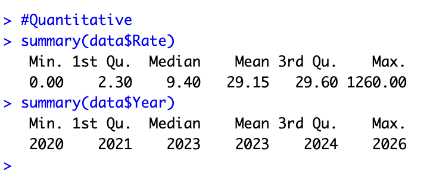
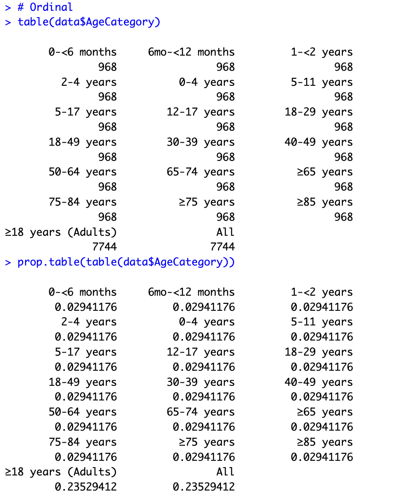
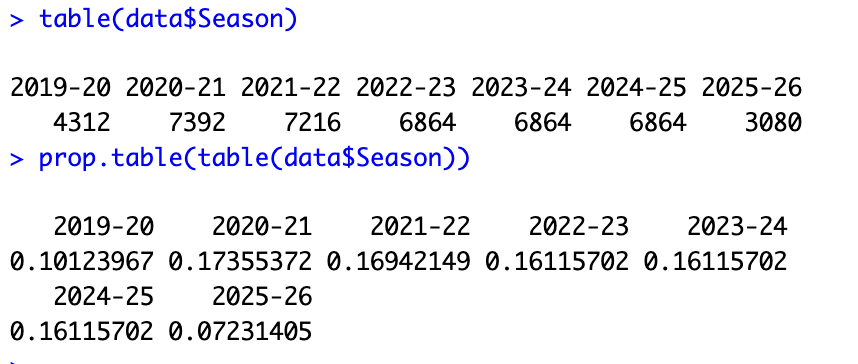
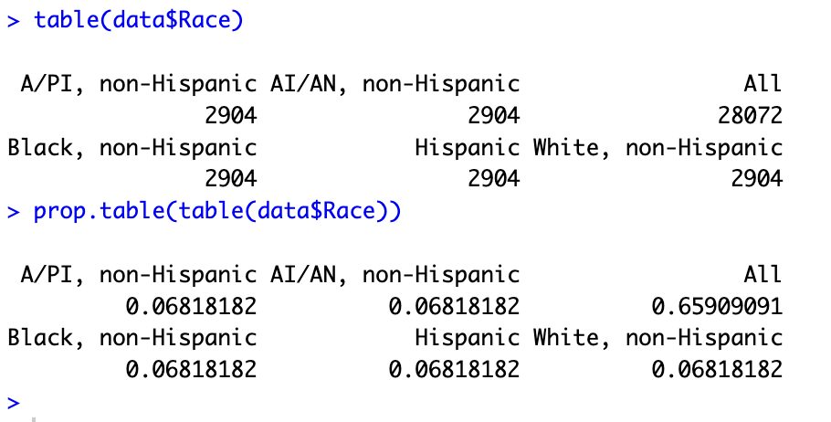
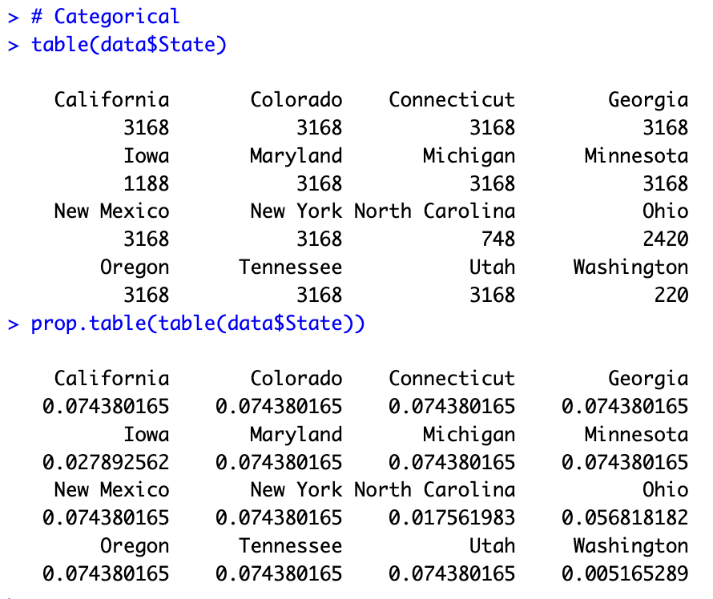

Summary Statistics & Visualizations





Distribution of Monthly Hospitalization Rates

This histogram shows how hospitalization rates are distributed across all months and states. The distribution is highly right-skewed due to Omicron-era peaks.
Hospitalization Rates Over Time

Monthly hospitalization rates plotted over time, illustrating pandemic waves and the dramatic Omicron surge in 2021–22.
Hospitalization Rates by Age Group

Boxplot showing the distribution of hospitalization rates across age groups. Older adults show substantially higher and more variable rates.
Hospitalization Rates by Season

Rates broken down by respiratory season, revealing that 2021–22 (Omicron) was a clear outlier relative to all other seasons.
Distribution of Records by Race

Bar chart showing record counts by racial/ethnic group after removing the aggregate "All" category.
Distribution of Records by State

Record counts across the 16 surveillance states, showing roughly balanced coverage.
Age Distribution of Records

Frequency of records across the 11 non-overlapping age groups after cleaning.
Hospitalization Rate by State

Comparing average hospitalization rates across states reveals geographic variation.
Year Distribution

Record counts per year confirm coverage across all seasons from 2019 through 2026.